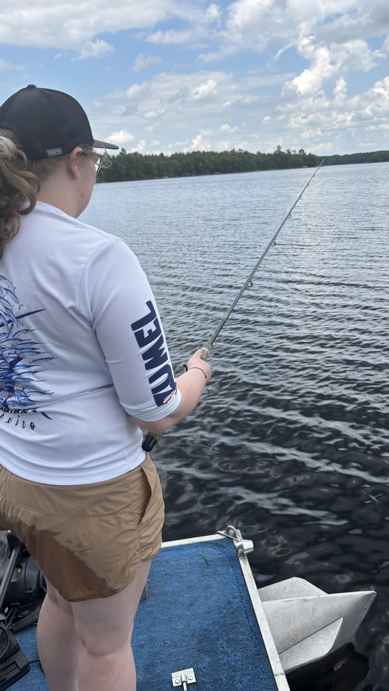
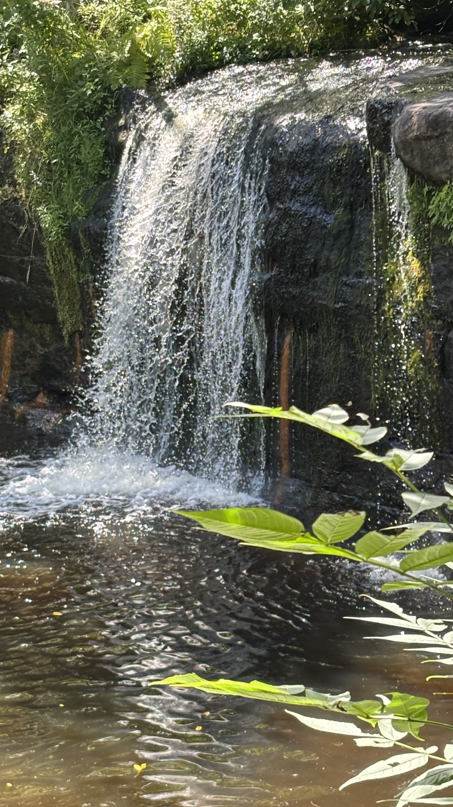
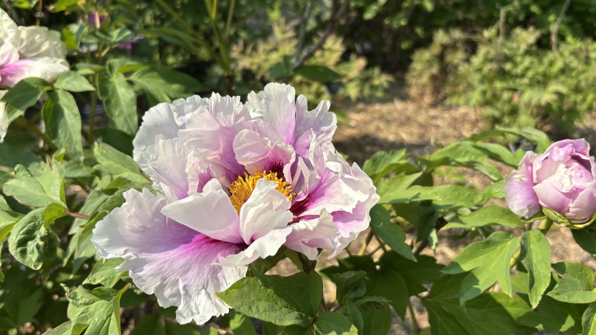
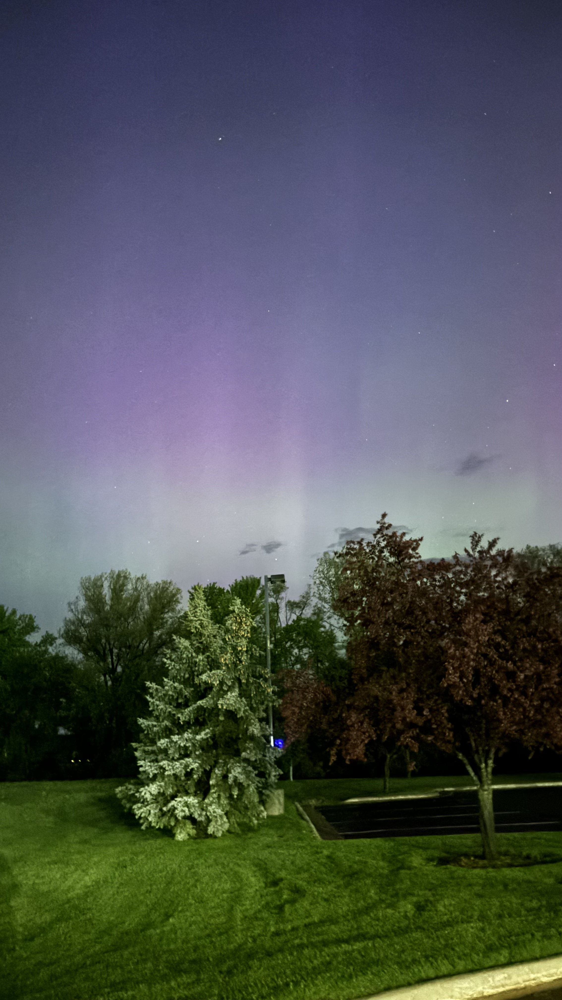

I believe the best engineers are curious people — and curiosity doesn't stop at a code editor. Whether I'm reading on a trail, waiting for a fish to bite, or watching something grow in a garden, I'm always learning something new about patience, observation, and the world around me.
My hobbies

Fishing
There's something grounding about sitting by the water and just waiting. Fishing taught me patience long before coding did — and Minnesota has no shortage of beautiful lakes to cast a line in.

Hiking
Trails are my favorite place to think through problems. Some of my best ideas have come mid-hike when my brain finally gets a chance to wander away from a screen.

Gardening
Gardening is slow, iterative, and deeply satisfying — not unlike debugging. I love watching something grow from a seed into something real, especially when you had to troubleshoot along the way.

Reading
A good book is my reset button. I'll read just about anything — fiction, nonfiction, you name it. Reading keeps my curiosity alive and my imagination sharp.
A few fun facts